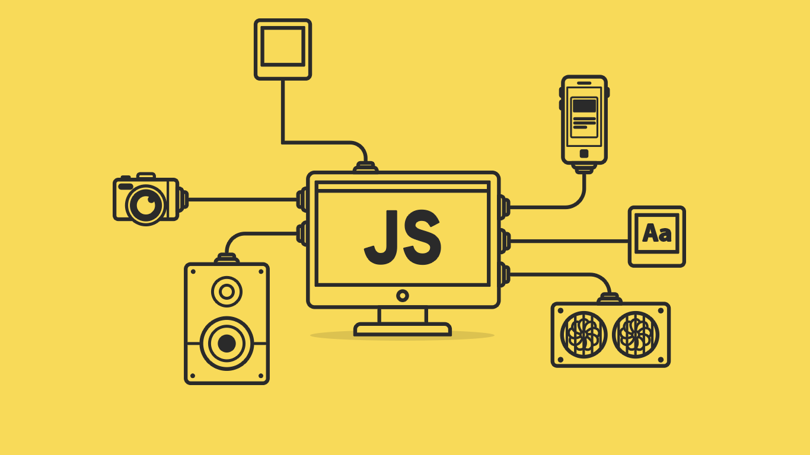

Lab 8 Anon Functions and Callbacks

Challenges
My partner and I initially struggled figuring out how to input a code that would work in the console to try out the function and callback actions. It was mainly understanding why the math was not computing correctly in the function but we realized it was a problem with the equations we had used and fixed them.
Problems
We had difficulty printing parts of our fucntions back into the console from JS with the code "console.log."
Results
My partner and I successfully experimented with functions especially callback functions in JavaScript to complete our goal which in this case was to create working functions that compute data you enter.